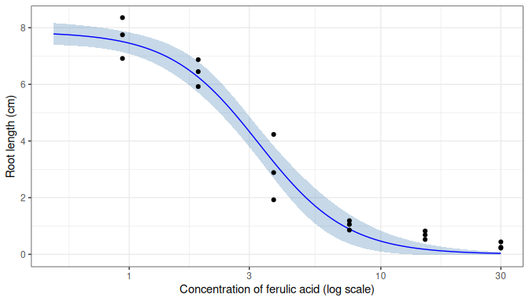
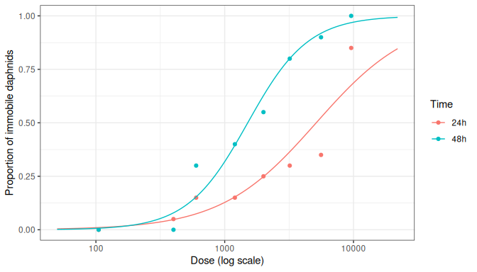
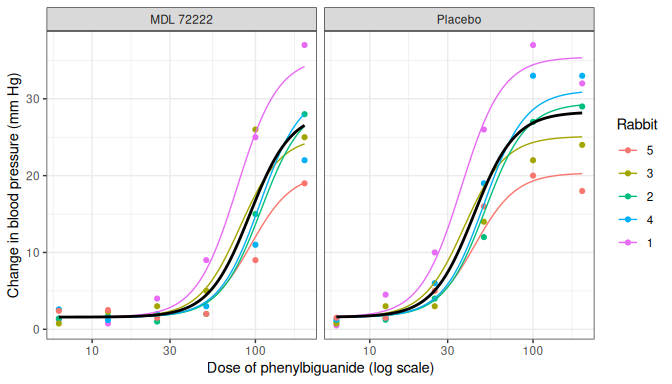

drcTMB fits nonlinear dose-response models by maximum likelihood with the Template Model Builder (TMB). The interface resembles drm() of the drc package, but TMB’s automatic differentiation and Laplace approximation extend the models well beyond nonlinear regression: random effects, non-normal responses, covariates on every parameter, correlated residuals and priors, together with effective doses and benchmark doses for all of them.
Main features
- Dose-response models: log-logistic, logistic, Weibull (two types), log-normal, Gompertz, gamma, multistage, Michaelis-Menten, asymptotic regression, the hormesis models of Brain-Cousens and Cedergreen, the threshold model NEC, the substrate inhibition model of Haldane, and the exponential and power models of PROAST and BMDS. All share the parameter names b1 to b5 (lower and upper asymptote, steepness, location, asymmetry or shape).
-
Response distributions (
family): gaussian, lognormal, binomial, beta-binomial, poisson, negative binomial, beta, and time-to-event data (germination counts in time intervals). -
Covariates on any of the parameters (
fform), e.g. one ED50 for each treatment, and links of single parameters (parlink) or of the whole curve (curvelink). -
Random effects on any of the parameters (
rform), with correlated random intercepts and slopes and nested grouping factors, as in lme4. -
Correlated residuals and variance functions (
correlation,variance): AR(1), continuous-time AR(1), compound symmetry and spatial structures; power, exponential and stratified variances, as in nlme. -
Inference: Wald, profile likelihood and parametric bootstrap intervals; likelihood ratio, F and bootstrap tests with
anova(); robust (sandwich) standard errors, also for clustered data; confidence and prediction intervals withpredict(); residual diagnostics withplot(). -
Effective doses (
ed()) and the peak of hormesis curves (peak()), for every curve of a model, with simultaneous intervals and ratios of effective doses through multcomp and mratios. -
Benchmark doses (
bmd()): excess and additional risk, relative deviation and standard deviation definitions, also with random effects; model averaging with AIC or BIC weights and bootstrap BMDLs (bmdma()). -
Bayesian benchmark doses: priors on all parameters and on the BMD itself, marginal likelihoods and Bayesian model averaging (
bmdbayes()), and the default approach of EFSA (2022) in a single call (bmdefsa()).
Installation
# install.packages("pak")
pak::pak("daniel-gerhard/drcTMB")The examples below use data sets of drcTMB, most of them from the package drcData, and of nlme.
A first model
The root length of ryegrass decreases with the concentration of ferulic acid. A log-logistic model with the lower asymptote b1 fixed at 0 and without the asymmetry parameter b5 is the three-parameter model LL.3() of drc.
library(drcTMB)
library(ggplot2)
data(ryegrass)
mod <- drmTMB(rootl ~ conc, data = ryegrass, model = "loglogistic",
start = c(b1 = 0, b5 = 0), fix = c(b1 = TRUE, b5 = TRUE))
mod
#> Call:
#> drmTMB(form = rootl ~ conc, data = ryegrass, start = c(b1 = 0,
#> b5 = 0), fix = c(b1 = TRUE, b5 = TRUE), model = "loglogistic")
#>
#> Model: loglogistic
#> Family: gaussian, identity link for the asymptotes
#>
#> Coefficients:
#> b2:(Intercept) b3:(Intercept) b4:(Intercept)
#> 7.855 -2.470 3.263
#> Fixed: b1:(Intercept) = 0, b5:(Intercept) = 0
#>
#> Residual standard deviation: 0.5616predict() gives confidence intervals for the mean response, and with interval = "prediction" prediction intervals for new observations.
nd <- data.frame(conc = exp(seq(log(0.5), log(30), length.out = 100)))
nd <- cbind(nd, predict(mod, newdata = nd, interval = "confidence"))
ggplot(nd, aes(x = conc)) +
geom_ribbon(aes(ymin = lwr, ymax = upr), fill = "steelblue", alpha = 0.3) +
geom_line(aes(y = fit), colour = "blue") +
geom_point(data = subset(ryegrass, conc > 0), aes(y = rootl)) +
scale_x_log10() +
labs(x = "Concentration of ferulic acid (log scale)", y = "Root length (cm)") +
theme_bw()
Effective doses, here the concentrations that reduce the root length by 10%, 50% and 90% of the range of the curve, come with profile likelihood intervals by default.
Several curves and a binomial response
The immobility of daphnids was recorded after 24 and 48 hours. A binomial model with a separate steepness b3 and location b4 for each time compares the two curves; the asymptotes are fixed at 0 and 1, and the ED50s start at a dose of 1000.
data(daphnids)
dmod <- drmTMB(cbind(no, total - no) ~ dose, data = daphnids,
model = "loglogistic", family = "binomial",
fform = b3 + b4 ~ 0 + time,
start = c(b1 = 0, b2 = 1, b4 = 1000, b5 = 0), fix = c(b1 = TRUE, b2 = TRUE, b5 = TRUE))
nd <- expand.grid(dose = exp(seq(log(50), log(22000), length.out = 100)), time = c("24h", "48h"))
nd$fit <- predict(dmod, newdata = nd)
ggplot(daphnids, aes(x = dose, y = no/total, colour = time)) +
geom_point() +
geom_line(data = nd, aes(y = fit)) +
scale_x_log10() +
labs(x = "Dose (log scale)", y = "Proportion of immobile daphnids", colour = "Time") +
theme_bw()
ed() estimates the effective doses of each curve given in newdata, with their covariance matrix, so that simultaneous intervals for differences (multcomp::glht()) or ratios (mratios::gsci.ratio()) follow, here the relative potency of the ED50 after 24 hours to the one after 48 hours.
(ed50 <- ed(dmod, respLev = 50, newdata = data.frame(time = c("24h", "48h"))))
#> Effective dose estimates:
#>
#> Estimate Std.Error
#> 50:time=24h 5134 1057
#> 50:time=48h 1509 188
mratios::gsci.ratio(coef(ed50), vcov(ed50), rbind("24h/48h" = c(1, 0)), rbind(c(0, 1)))
#> Unadjusted 95% confidence intervals
#> Normal approximation, quantile:1.96
#> estimate lower upper
#> 24h/48h 3.402 1.95 5.285Random effects
In the PBG experiment of the nlme package, five rabbits received increasing doses of phenylbiguanide, once after an antagonist (MDL 72222) and once after a placebo, and the change of the blood pressure was recorded. Random effects of the rabbits on the upper asymptote b2 and on the ED50 b4 account for the repeated measurements of the same rabbits; with a log link of b4, the treatment acts multiplicatively on the ED50.
data(PBG, package = "nlme")
pbg <- as.data.frame(PBG)
pbg$Rabbit <- factor(pbg$Rabbit, ordered = FALSE)
pmod <- drmTMB(deltaBP ~ dose, data = pbg, model = "loglogistic",
fform = b4 ~ Treatment, rform = b2 + b4 ~ 1 | Rabbit, parlink = c(b4 = "log"),
start = c(b5 = 0), fix = c(b5 = TRUE))
summary(pmod)
#> Call:
#> drmTMB(form = deltaBP ~ dose, fform = b4 ~ Treatment, rform = b2 +
#> b4 ~ 1 | Rabbit, data = pbg, start = c(b5 = 0), fix = c(b5 = TRUE),
#> model = "loglogistic", parlink = c(b4 = "log"))
#>
#> Model: loglogistic, increasing curve
#> Family: gaussian, identity link for the asymptotes, log link for b4
#>
#> Number of observations: 60, groups: Rabbit 5
#> Log-likelihood: -147.8 (df = 9), AIC: 313.6, BIC: 332.5
#>
#> Coefficients:
#> Estimate Std. Error
#> b1:(Intercept) 1.5870 0.501
#> b2:(Intercept) 28.2991 2.551
#> b3:(Intercept) 3.4393 0.438
#> b4:(Intercept) 4.5262 0.088
#> b4:TreatmentPlacebo -0.7542 0.062
#> The coefficients of b4 are on the log scale.
#> Fixed: b5:(Intercept) = 0
#>
#> Random effects:
#> Groups Name Std.Dev. Corr
#> Rabbit b2 5.3640
#> b4 0.1576 -0.018
#>
#> Residual standard deviation: 2.359
#>
#> Optimiser: nlminb: relative convergence (4), maximum absolute gradient 0.00018predict() gives the curves of the rabbits and, with random = FALSE, the population curves.
nd <- expand.grid(dose = exp(seq(log(6.25), log(200), length.out = 100)),
Treatment = levels(pbg$Treatment), Rabbit = levels(pbg$Rabbit))
nd$fit <- predict(pmod, newdata = nd)
nd$pop <- predict(pmod, newdata = nd, random = FALSE)
ggplot(pbg, aes(x = dose, y = deltaBP, colour = Rabbit)) +
geom_point() +
geom_line(data = nd, aes(y = fit)) +
geom_line(data = subset(nd, Rabbit == "1"), aes(y = pop), colour = "black", linewidth = 1) +
facet_wrap(~ Treatment) +
scale_x_log10() +
labs(x = "Dose of phenylbiguanide (log scale)", y = "Change in blood pressure (mm Hg)") +
theme_bw()
The standard errors of effective doses and benchmark doses include the variation between the rabbits. The antagonist shifts the ED50 by a factor of about two:
(ed50p <- ed(pmod, respLev = 50, newdata = data.frame(Treatment = levels(pbg$Treatment))))
#> Effective dose estimates:
#>
#> Estimate Std.Error
#> 50:Treatment=MDL 72222 92.4 16.68
#> 50:Treatment=Placebo 43.5 7.86
mratios::gsci.ratio(coef(ed50p), vcov(ed50p), rbind("MDL/Placebo" = c(1, 0)), rbind(c(0, 1)))
#> Unadjusted 95% confidence intervals
#> Normal approximation, quantile:1.96
#> estimate lower upper
#> MDL/Placebo 2.126 1.868 2.421Benchmark doses
The benchmark dose (BMD) is the dose at which the response has changed from the response at dose zero by the benchmark response; the BMDL, the lower limit of a 90% interval, is the reference point of a risk assessment. For a 5% decrease of the root length of ryegrass:
confint(bmd(mod, bmr = 0.05, def = "relative"), level = 0.9)
#> 5 % 95 %
#> 0.05:lf1 0.7153985 1.333767As the BMD depends on the model, bmdma() averages it over several models, here log-logistic and Weibull models with a normal or lognormal response, with a bootstrap BMDL.
fitm <- function(model, family = "gaussian")
drmTMB(rootl ~ conc, data = ryegrass, model = model, family = family,
start = c(b1 = 0, b5 = 0), fix = c(b1 = TRUE, b5 = TRUE))
bmdma(LL = mod, W1 = fitm("weibull1"), W2 = fitm("weibull2"),
LLlognormal = fitm("loglogistic", "lognormal"),
bmr = 0.05, def = "relative", nsim = 200, seed = 1, progress = FALSE)
#> Model-averaged benchmark doses, relative deviation, averaged curves:
#>
#> model family logLik df AIC weight BMD
#> LL loglogistic gaussian -18.60 4 45.21 0.138088 0.9909
#> W1 weibull1 gaussian -22.22 4 52.44 0.003712 0.7538
#> W2 weibull2 gaussian -16.78 4 41.56 0.856966 1.3520
#> LLlognormal loglogistic lognormal -23.32 4 54.64 0.001235 0.2744
#>
#> BMD BMDL BMDU
#> 0.05:lf1 1.308 0.8068 1.49
#>
#> Bootstrap percentile intervals (200 samples), level 90%bmdefsa() follows the Bayesian model averaging of EFSA (2022), with its default priors, and bmdbayes() averages models with priors of your own.
Hormesis
Low concentrations of isobutyl alcohol stimulate the growth of lettuce. The Brain-Cousens model adds a hormesis effect b5 to the log-logistic curve, and peak() estimates the dose and the response at the maximum.
Time-to-event data
Germination experiments count the seeds that germinate in each time interval. With family = "event", each row is an interval from start to end, and the curve is the cumulative proportion of germinated seeds. ed() then gives the times by which a percentage of the germinating seeds has germinated.
Robust standard errors
If the variance is misspecified, or the observations are correlated within clusters, sandwich standard errors are available through the argument vcov. of summary(), confint(), predict(), ed() and bmd(), e.g. for clusters given by a variable plate: ed(fit, 50, vcov. = function(f) vcovrobust(f, cluster = ~ plate)).
ed(mod, respLev = 50, vcov. = vcovrobust)
#> Effective dose estimates:
#>
#> Estimate Std.Error
#> 50:lf1 3.26 0.266Learn more
The vignette describes all features in detail, with the definitions of the models, the families and the benchmark doses:
vignette("drcTMB")To install the package with the vignette, use remotes::install_github("daniel-gerhard/drcTMB", build_vignettes = TRUE).